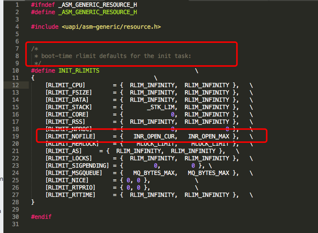
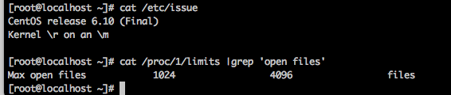
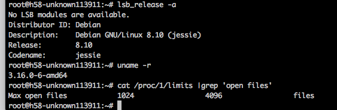
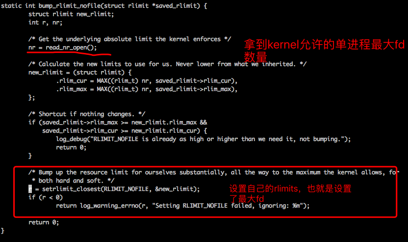
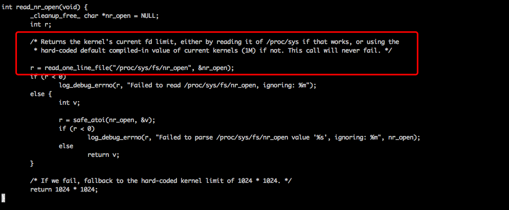
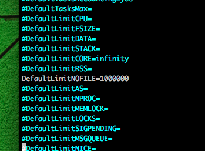

一个进程Max open files的来源
- 默认情况下他的ulimit相关设置继承自他的父进程，所以他的Max open files也继承自父进程
- 触发过PAM机制(使用了pam_limits.so)而产生的进程，以及他们的子进程，（比如su,sudo,login等等程序产生的子进程）还会受到/etc/security/limits.* 下相关的设置，这个大家都懂
重点来了，所有进程都是init进程的后代，那么init进程的RLIMITS是在哪里定义的呢？
继续以Max open files为例子，进行探索
一 内核源码中RELIMITS的默认设置
./linux-3.16.51/include/asm-generic/resource.h

左边的是soft limit，右边的是hard limit， 其中
[RLIMIT_NOFILE] = { INR_OPEN_CUR, INR_OPEN_MAX },
INT_OPEN_CUR,INT_OPEN_MAX定义在哪里呢？
./linux-3.16.51/include/uapi/linux/fs.h
所以init进程一开始的默认值，就是1024和4096。
验证
一 使用2.6系列内核的centos6

二 使用3.16内核的debian8

三 使用systemd的系统上，却不是1024和4096
另外，每个进程可以通过系统调用setrlimit设置自己的RLIMTS，也可以通过getrlimit系统调用查看自己的RLIMITS.其中root用户可以调大自己的RLIMITS，非root用户只能调小。systemd进程的用户是root，可以通过setrlimit调用，提高自己的RLIMITS。
猜想： 应该是systemd进程自己进行了setrlimit调用。于是查看systemd的源代码：
1 在src/core/main.c 1162行，设置自己的最大fd 
2 再看下read_nr_open函数的定义： 在 src/basic/fd-util.c 956行

读取kernel允许的单进程最大的fd，如果读取失败，默认返回1024*1024
r = read_one_line_file("/proc/sys/fs/nr_open", &nr_open);
我们都知道，linux上单进程能打开的最大文件数取决于/proc/sys/fs/nr_open的设置。
当然，systemd生成的子进程，它默认的RLIMITS也不是继承自己的设置，而是读取配置文件/etc/systemd/system.conf里相关设置

总结
- 一个进程的Max open files默认继承自他的父进程
- 使用了pam_limits.so而产生的子进程，会受到/etc/security/limits.*配置的影响. 而我们线上的sshd服务，默认是忽略PAM设置的，可以查看配置文件 导致由sshd产生的子进程，默认都继承了sshd进程的ulimit设置
- 进程可以通过setrlimit系统调用进行调整、通过getrlimit进行查看自己的RLIMITS。shell的ulimit命令，其实底层也是调用setrlimit和getrlimit
- 老版本的init进程（SysVinit和Upstart），是采取kernel默认给的RLIMITS设置
- 新版本的init进程，也就是systemd，是自己读取了/proc/sys/fs/nr_open的设置
补充，如何在线修改线上服务的rlimit（不重启应用）
本质能力： root用户+prlimit()系统调用 其中，prlimit是一个用户空间工具，可以使用prilimit()系统调用
一 使用prlimit工具
#使用prlimit命令修改core文件大小限制
root@VM-131-5-ubuntu:/etc/security# prlimit -p 6034 --core=unlimited:
#再次查看该nginx进程的core文件大小限制
root@VM-131-5-ubuntu:/etc/security# cat /proc/6034/limits |grep core
Max core file size unlimited unlimited bytes
prlimit -p 26281 --nofile=1000000
二 python + resource模块
#利用python3 resource模块修改core文件大小限制
root@VM-131-5-ubuntu:/etc/security# python3
Python 3.4.3 (default, Nov 12 2018, 22:25:49)
[GCC 4.8.4] on linux
Type "help", "copyright", "credits" or "license" for more information.
>>> import resource
>>> resource.prlimit(16436,resource.RLIMIT_CORE,(-1,-1))
(0, -1)
>>> exit()
#再次查看该nginx进程的core文件大小限制
root@VM-131-5-ubuntu:/etc/security# cat /proc/16436/limits |grep core
Max core file size unlimited unlimited bytes